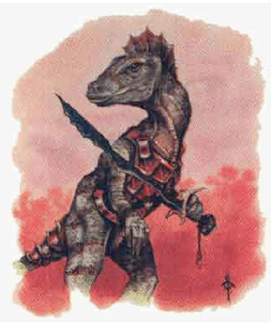
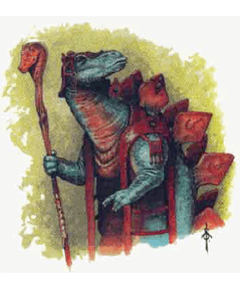
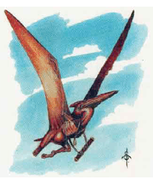
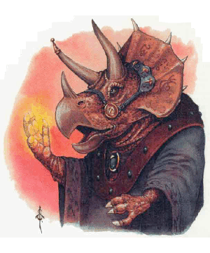

2125 • 2166
| Finhead | Bladeback | Flyer | Hornhead | |
|---|---|---|---|---|
| Climate/Terrain: | Jungle | Jungle | Jungle/mountain | Jungle |
| Frequency: | Very rare | Very rare | Very rare | Very rare |
| Organization: | Community | Community | Community | Community |
| Activity Cycle: | Day | Day | Day | Day |
| Diet: | Omnivore | Vegetarian | Carnivore | Vegetarian |
| Intelligence: | Very (11-12) | Very (11-12) | Very (11-12) | Very (11-12) |
| Treasure: | Nil | Nil | Nil | Nil |
| Alignment: | Any | Any | Any | Any |
| No. Appearing: | 1-6 | 1-4 | 2-8 | 1-2 |
| Armor Class: | 5 | 4 | 6 | 4 |
| Movement: | 12 | 10 | 9, Fl 24 (C) | 10 |
| Hit Dice: | 2 | 2 | 2 | 4 |
| THAC0: | 19 | 19 | 19 | 17 |
| No. of Attacks: | 1 or 2 | 1 or 3 | 1 or 3 | 1 or 3 |
| Damage/Attack: | By weapon | By weapon | By weapon | By weapon |
| Special Attacks: | See below | See below | See below | See below |
| Special Defenses: | See below | See below | See below | See below |
| Magic Resistance: | Nil | Nil | Nil | Nil |
| Size: | M (5’ tall) | L (7’ tall) | S (3’ tall) | L (10’ tall) |
| Morale: | Steady (12) | Steady (12) | Average (10) | Elite (14) |
| XP Value: | 35 | 35 | 65 | 120 |
Saurials are intelligent bipedal lizards descended from creatures similar to dinosaurs. Saurials are not native to the Realms, but originate from an alternate Prime Material Plane. Most saurials now in the Realms were kidnapped from their homes and brought to the Realms as slaves by the evil god Moander. Upon Moander’s death, these saurials elected to remain in the Realms and make it their home. They live in a single village in the Lost Vale in the Desertsmouth Mountains east of Anauroch. They are still recovering physically and spiritually from the deprivations they suffered under Moander, so very few saurials travel far from the shelter of the Lost Vale, though this may change with the passing of the years and as their numbers increase.
There are many different races of saurials, but only finheads, bladebacks, flyers, and hornheads are currently in the Realms. These are the names provided by the natives of the Realms to these newcomers. The saurials’ own names are a combination of noises and scents which do not translate well into mammalian speech.
All four races have brightly colored scales, sharp claws, and tails, but their body shapes otherwise vary considerably. A finhead is nearly human in shape, though shorter than most humans, with a tail just over half its body length and a pronounced fin on its head. A bladeback is taller and stockier with a series of large, sharp scales which extend from the top of its head, down its spine and along its nearly body-length tail. A flyer has a delicate frame, with smaller legs, a shorter tail and a flap of scalecovered flesh beneath each arm which serve as wings. So although ungainly on foot, a flyer is extremely graceful when airborne. A hornhead is a giant beast with a tail longer than its own body and sharp horns protruding both from its head and the great bony plate which protects its neck. All four of these races have scales of some shade of green and their back scales are mixed with yellow scales in patterns unique to each individual. Flyers sometimes feature a bolder red splotch around their necks. Only rarely is a pure white saurial born in each race.
All saurials have true infravision. They can detect heat wavelengths with their eyes, but they cannot see a cold object in the dark. Although they are not cold-blooded like true lizards, saurials are not as efficient at keeping their blood warm as are Realms mammals. If exposed too long to freezing air, saurials go into a torpor called cold sleep. They fall asleep and their breathing slows until they may even appear dead. A saurial’s ability to resist the cold sleep is based on its size. A 3-foot flyer succumbs to the cold sleep in 3 turns, while a 5-foot finhead succumbs in 5 turns, and so forth. If the saurial is bundled in insulating clothing, these times are doubled. A saurial in cold sleep returns to consciousness within an hour or two if it is brought to a warm place. A saurial left exposed to freezing weather for more than a day dies.
For daily activities saurials do not generally wear more than loin cloths and simple, loose cloaks as long as they are in a tropical climate. They do, however, wear ornate robes of fabric and animal hides for ceremonial occasions. They decorate their homes with wall hangings and floor coverings. Saurials are not comfortable in armor. To avoid the cold sleep saurials bundle up in colder regions. Tattoos are common, particularly among spellcasters, and depending on their race, saurial mages either carve special symbols into the bony plates of their body or tattoo them into their scales.
Saurials do not speak any Realms languages; indeed, to most humans they do not seem to speak at all, since their voices are pitched too high to be heard without magic. The emotions accompanying their words are emitted as scents that humans can often detect, so a human familiar with the saurials can often tell what one is feeling without knowing what one is saying. Saurials can hear human speech, but so far, none have learned the language, although many of their spellcasters can use magic to do so. One of their number, the paladin Dragonbait, understands Common because of his magical bond with the sellsword Alias of Westgate. The saurials. form of writing is to carve lines on sticks, which is used mostly for magic and important records.
Combat: Saurials, like humans, fight with a variety of weapons, mainly determined by their character class. For example, spellcasters use magic, fighters use blades and missile weapons, and clerics favor blunt weapons or magic. Saurial-crafted blades have shorter grips and favor barb-like tips. Humans not used to such weapons suffer a -1 attack penalty with saurial blades, and saurials suffer a -1 attack penalty with human weapons.
If unarmed and severely pressed, saurials resort to ancient modes of attack. Finheads claw with both hands (1d3/1d3) or use their thick tail as a whip (1d2). Bladebacks use both claws (1d4/1d4) and swing at any rear attacker with their razored tail (1d6). Flyers claw and bite (1d2/1d2,1d2). Hornheads either claw (1d4/1d4) and swing their tail (2d4) or charge with their horns (2d6).
Saurial Armor Class is as listed for each of the individual races, and is a result of their own thick natural hides. Saurial Armor Class can be improved by means of armor, though this is an alien concept to saurials, and such armor would need to be custom-made for the creatures. Saurial Armor Class would only be improved if the Armor Class would be higher than the saurial’s natural Armor Class. So a finback in leather armor would gain no benefit. Exceptional saurials have the same limitations as their character class. Saurial mages do not wear armor, and saurial thieves would be limited to the protection of leather armor, which would be insufficient for their protection and as such not used.
Because of the nature of the saurial senses, all saurials receive a +2 saving throw bonus against sound-based attacks, such as a harpy’s charm or a shout spell. They are more susceptible to gasbased attacks, including poison gas and cloudkill spells, and as such have a -2 penalty on all saving throws against these attack forms.
Habitat/Society: The adult saurials of the Lost Vale number 110 and consider themselves one tribe, although they are made up of different races. Leading and protecting this tribe are a hornhead wizard of 14th level named Grypht, Grypht’s three apprentices, a bladeback priest of 7th level named Sweetleaf, who worships Chauntea in lieu of his own goddess of the harvest, and Sweetleaf’s five acolytes. The renowned finhead paladin Dragonbait visits the valley as often as his adventures allow. The tribe’s other adventurers were killed battling Moander in their original plane. The remaining members are villagers without adventuring skills. Most are farmers and hunters. There are weavers, carpenters, a stonemason, a blacksmith, and musicians among their numbers. Moander killed all their young but 20 more saurials have hatched since the evil god’s death. The adults have worked hard to build their new village and to restore order, but they are still somber after their ordeal. They look for the next generation to bring joy back into their lives. The saurials harvest and gather enough food and keep warm and dry in small thatched huts, but they prefer solid single family dwellings of stone or wood. One by one, each family is building a home, and gradually adding extra rooms onto them.
This outpost is the sole known established domain of saurials in the Realms. However, once the gap between the Realms and the saurials’ home plane has been breeched, there is a chance that more saurials may appear in Faer?n, or that adventurers from this dimension may find their way to the saurial homeworld.
Saurials live in mixed groups with little conflict among the races, unlike the mammals of the Realms, which seem to have different nations for dwarves, and men. Saurials think of themselves as saurials first, and their sub-race second, and recognize that the other races of saurials have as much to contribute to their community as their own race, if not more. Saurial communities consist of all types of the various races, though there tends to be fewer of the larger hornheads and bladebacks because of the food limitations. Even communities with one race of saurials treat all other races as brethren. The Realms domain of the Lost Vale has primarily finbacks, but also has a large number of flyers, and a smattering of bladebacks and hornheads, including their leader, Grypht.
The listed statistics are for common saurials, but like the races of the Realms, these creatures have a number of exceptional individuals whose abilities closely resemble those of exceptional fighters, priests, mages, and thieves. In random encounters outside the Lost Vale, for every ten “common” saurials encountered there is an individual of exceptional ability, either a fighter (40%), mage (40%), priest (10%), or thief (10%). These exceptional individuals are of levels 1-10. They are unarmored, but equipped with weapons according to the restrictions of their class. Saurial spell-casters may still cast their spells in this plane, and those who derive their abilities from gods may continue to do so if their god has a Realmsian equivalent.
Ecology: Saurials mate for life and can produce 1-2 eggs a year. Both male and female share the duties of keeping the eggs warm and safe, feeding the hatchlings, and training them. A saurial appears full grown within five years, but the experience that brings mental maturity takes as long to develop as it would in a human. Saurials live a very long time if in favorable conditions. Grypht is more than 200 years old, without the aid of magic. Hornheads and bladebacks require a lot of vegetation to survive, so they are careful to limit their numbers in small regions, while the Lost Vale’s abundant wildlife can support many more finheads and flyers.
Finbacks
Finbacks tend to be alert, bright, active, curious, and emotional. They are good with their hands and have enough muscle for common work and defense. Exceptional finbacks are usually, though not always, fighters or fighter sub-classes. Finbacks tend to believe in ultimate concepts of good, evil, and truth, and see things in terms of black and white. They are enthusiatic about new tasks and adventures, and leap into dangerous situations before getting a full idea of what dangers await. Most saurials found outside the Lost Vale are likely to be finbacks.
Hornheads
Hornheads are large and powerful, and tend toward careful, rational planning and thought. While they are slow of speech and carefully choose their words, they are not slow of mind, and have an interest in the sciences and crafts such as blacksmithing and weapon-making. Exceptional individuals may be of any character class, but the most powerful hornhead in the Realms is a spell-caster.
Bladebacks
Bladebacks are social creatures, more than the other three races, and as such tend to congregate with other saurials more readily. They are the most straight-forward and trusting of the saurials, but understand saurial nature well enough to know what their comrades want. Bladebacks are slow to anger, but once riled are passionate fighters. They are slow to forgive slights and offenses, and have long memories. Within the saurial organization, bladebacks often rise to positions of power as leaders of the combined groups, or advisors to those leaders. Exceptional bladebacks are often priests.
Flyers
Flyers are nervous, noisy saurials, both irritable and irritating. They have the benefit of flight, and as such often flee rather than fight. Enthusiastic conversationalists, flyers natter on about whatever gossip comes to mind. Their role in the community is usually as scouts or messengers, but there have been flyer heroes in saurial history who have rescued their larger brethren on many occasions, as any flyer will repeatedly tell you. Exceptional flyers are usually fighters or thieves.
◆ 1570 ◆